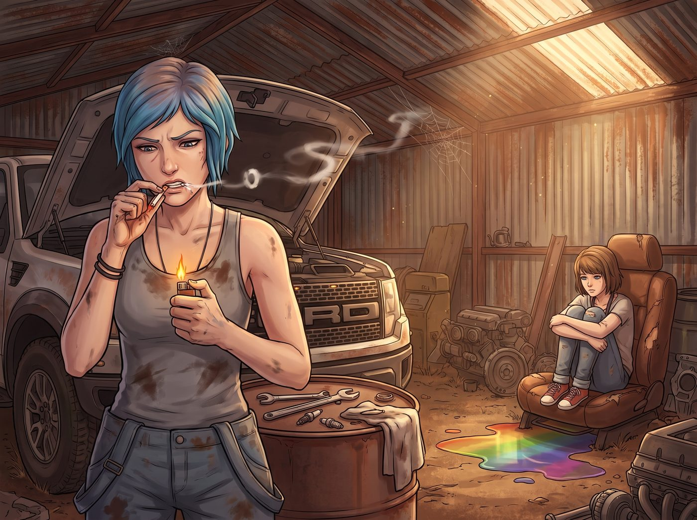
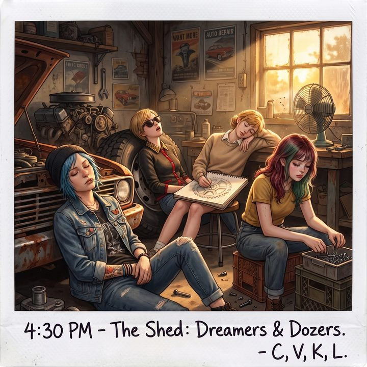
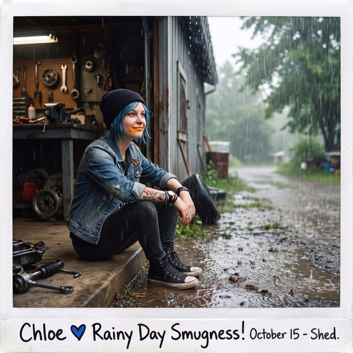

鹹魚的午後



一、罷工病毒
奧林匹亞半島的午後，陽光透過修車棚生鏽的鐵皮屋頂縫隙切割成一道道光柱，空氣中懸浮著微熱的灰塵，瀰漫著機油、WD-40防鏽劑與乾燥泥土的混合氣味。
「嘶——」
Chloe 皺了皺眉，用兩根沾著黑色油污的手指，硬生生把那根含在嘴裡太久的菸從下嘴唇上撕了下來。乾燥的菸紙已經黏住了嘴皮，扯下時帶著一絲微弱的刺痛。她煩躁地從工裝褲口袋裡摸出那個標誌性的子彈頭打火機，「咔噠」一聲，一團橘黃色的火苗終於點燃了這根等待了半個小時的菸。
Chloe 深深吸了一口，然後仰起頭，朝著車棚頂部的蜘蛛網吐出一長串灰白色的煙圈。
猛禽皮卡的引擎蓋大開著，像一頭張著嘴等待牙醫檢查的鋼鐵巨獸。旁邊的鐵桶上散落著各種型號的套筒扳手、火星塞和一團髒兮兮的抹布。按照原定計畫，Chloe 今天下午必須把皮卡的發電機皮帶換掉。
但現在，她只是穿著那件沾滿油污的灰色背心，毫無形象地癱靠在皮卡的前保險桿上，雙腿向前伸直，眼神渙散地盯著地上一灘彩虹色的漏油反光。
而她的「監工」Max，此刻正把自己完美地嵌在一個從報廢轎車上拆下來的破爛真皮副駕駛座裡。這個座椅被隨意丟在車棚角落，彈簧已經塌陷，卻意外地符合人體工學。Max 雙膝蜷縮著，胸前掛著寶麗來相機，下巴抵在膝蓋上，看著那灘反光的機油發呆。
在室內，Max 的發呆是柔軟的休眠；但在這充滿工業廢土氣息的修車棚裡，這兩條鹹魚的擺爛，昇華成了一種「藍領階級的防禦性罷工」。
「Max……」Chloe 叼著菸，聲音含糊又慵懶，「我剛才用眼神跟那條皮帶搏鬥了三十分鐘。它贏了。」
「嗯……」Max 發出一聲毫無意義的鼻音作為回應，連頭都懶得抬，「我覺得它看起來挺好的，充滿了……歷史的厚重感。今天不適合破壞歷史。」
「說得對，超級英雄也需要帶薪休假。」Chloe 滿意地閉上眼睛，任由菸灰掉在她的靴子上。
這種夾雜著尼古丁與機油味的「罷工病毒」，在密閉的車棚裡具有極強的傳染性。
五分鐘後，Victoria
踩著尖頭皮鞋，穿著一件與這個環境格格不入的絲綢襯衫出現在門口。她原本是來抱怨電鑽聲太吵（儘管過去一小時裡根本沒有任何工具運作的聲音），並且嫌棄地扇著鼻子前面的菸味。
「你們倆看起來就像是在這裡發酵的兩團工業廢料。」Victoria 雙臂交叉，冷冷地給出評價。
但很快，她敏銳地發現車棚深處有一台正在搖頭晃腦的巨大工業電風扇，正吹出不可思議的涼爽強風。Victoria 沉默了三秒，默默拉過一個稍微乾淨點的輪胎，墊上一張報紙，優雅地坐了下來。她戴上那副碩大的名牌墨鏡，雙腿交疊：「我只是來監督你們有沒有偷竊公司的公共資產。還有，風扇調大一檔。」
然後，她也像一尊精美的雕像般，陷入了靜止。
接著是 Kate。她端著一個放著三杯冰鎮薄荷檸檬水的托盤走進來。她沒有像往常一樣放下飲料就走，而是被角落裡一堆生鏽的齒輪吸引了目光。
「這個光影……好漂亮。」Kate 喃喃自語。她把托盤放在引擎蓋上，從圍裙口袋裡摸出一本速寫本和炭筆，直接盤腿坐在了一塊乾淨的防水布上。伴隨著炭筆摩擦紙張的沙沙聲，Kate 也完美地融入了這個「不生產任何實用價值」的鹹魚生態圈。
最後，這場擺爛大會迎來了終極挑戰——Lily。
穿著整潔防風外套的 Lily 拿著平板電腦走進車棚，眉頭微皺：「Chloe 學姐，根據維護日誌，猛禽的發電機皮帶更換作業已經超時百分之二百。這會影響我們明天的物資採購路線安全評估……」
Chloe 依然癱在保險桿上，連眼皮都沒抬。她吐出一口煙，緩緩抬起右手，指著不遠處一個裝滿各種雜亂螺絲、螺帽、墊片的巨大生鏽鐵桶。
「Lily，妳來得正好。猛禽的維修系統出現了致命的邏輯崩潰——那個桶裡的零件熵值達到了最高點。」Chloe 用一種極度嚴肅的「修車廠黑話」胡說八道，「在物理層面上重組那些螺絲的分類之前，我無法進行下一步。妳能幫忙進行降熵處理嗎？」
Lily 愣住了。看著那一整桶大小不一、混亂不堪的零件，她大腦裡那個「不解決混亂就會死」的行政強迫症程式瞬間被激活了。
「……這確實是一個嚴重的管理漏洞。」
Lily 妥協了。她放下平板，找了個小馬扎坐下，拿過幾個空盒子，開始將那幾千顆螺絲一顆一顆、按尺寸和螺紋分類。
這是一項不需要任何情感消耗、不需要風險評估，甚至不需要動腦的純機械勞動。
十分鐘後，Lily 緊繃的背脊慢慢放鬆了下來。她陷入了那種單調動作帶來的「禪意」之中，大腦的防禦機制徹底停擺。她甚至開始覺得，這種只和冰冷金屬打交道、毫無意義的消磨時間，比做任何高階聯邦報表都要讓人安心。
下午四點半，修車棚裡只剩下老舊風扇轉動時發出的「咯吱咯吱」聲。
Chloe 叼著早已熄滅的菸蒂睡著了，頭歪在保險桿上；Victoria 戴著墨鏡靠在輪胎上發出輕微的鼾聲；Kate 的速寫本掉在腿上，畫了一半的齒輪沐浴在金色的夕陽裡；Lily 依然在機械性地挑揀螺絲，但眼神已經處於一種半夢半醒的放空狀態。
Max 終於從那個塌陷的皮椅裡稍微直起了身子。她舉起寶麗來相機，將焦距對準這幅機油味十足的、屬於二號車廂的《午後睡蓮圖》。
「咔嚓。」
相片吐了出來。Max 滿意地看著影像逐漸顯影，然後心安理得地重新縮回座椅深處，閉上了眼睛，決定把「把照片貼進日記本」這項艱鉅的工作，推遲到明天再說。
二、藍領米其林
「劈啪！嘩啦啦——」
奧林匹亞半島的雨季從來不講道理。一場突如其來的暴雨毫無預警地砸在修車棚生鏽的鐵皮屋頂上，發出震耳欲聾的爆豆聲。氣溫在幾分鐘內驟降，空氣裡的機油味瞬間被潮濕的泥土與水氣（Petrichor）覆蓋。
Chloe 猛地打了個激靈，從保險桿上滑了一下，嘴裡那根早已熄滅的菸蒂終於掉到了地上。她煩躁地揉了揉亂糟糟的藍髮，轉過頭，剛好對上從破爛皮椅裡探出腦袋、睡眼惺忪的 Max。
兩條「始作俑者」的鹹魚被這場大雨強行喚醒了。
Chloe 剛想開口抱怨這該死的天氣，Max 突然對她豎起一根食指，比了個「噓」的手勢，然後用下巴指了指車棚的另外三個角落。
Chloe 順著 Max 的視線看過去，隨即死死捂住了自己的嘴，把一陣爆笑硬生生憋回了喉嚨裡。
這場「罷工病毒」的變異程度顯然超出了她們的預期。那三個平時最講究紀律和形象的人，此刻居然睡得比她們這兩條正牌鹹魚還要奔放。
Victoria 的絲綢襯衫已經皺成了一團，她依然維持著靠在輪胎上的姿勢，但那副巨大的名牌墨鏡已經滑到了鼻尖上，嘴巴微微張開，發出極度不符合名媛身份的輕微打呼聲。
Kate 畫了一半的速寫本掉在地上，臉頰上蹭到了一大塊黑色的炭筆灰，整個人像一隻蜷縮在防塵布上的流浪貓，睡得無比安詳。
最誇張的是 Lily。這位永遠處於高度警戒狀態的「大腦」，此刻正趴在那個裝滿螺絲的鐵桶邊緣。她的左手還維持著去抓螺絲的姿勢，右手手心裡緊緊攥著一顆 M8 規格的六角螺帽，彷彿那是某種安撫奶嘴。大雨的噪音完全沒有吵醒她，她睡得深沉而徹底，緊繃的眉心終於完全舒展開來。
Chloe 躡手躡腳地走到 Max 身邊，兩人蹲在皮椅後面，看著眼前這副荒謬的畫面，哭笑不得。
「我發誓，如果我現在手裡有麥克筆，Victoria 的臉上絕對會多一隻烏龜。」Chloe 用極低的氣聲在 Max 耳邊說道。
「妳敢畫，她明天就會用律師函把妳的工坊夷為平地。」Max 無聲地笑著，眼角都擠出了淚花。
就在這溫馨又滑稽的時刻，一陣極其不和諧的聲音打破了兩人之間的默契。
「咕嚕嚕嚕——」
聲音是從 Chloe 的肚子裡發出來的。Max 愣了一下，緊接著，她自己的肚子也發出了同樣飢餓的共鳴。
兩人面面相覷。下午五點半，暴雨傾盆。平時這個時間，如果是 Lily 醒著，她會啟動精確到公克的營養晚餐計畫；如果是 Kate 醒著，廚房裡應該已經飄出了迷迭香烤雞或者濃湯的香味。
但現在，大廚們都因為她倆傳染的「懶病」而在修車棚裡集體陣亡了。
「所以……我們現在吃鱉了對吧？」Max 看著門外雨刷都刮不清的暴雨，無奈地嘆了口氣。現在跑回車廂廚房弄吃的，不僅會淋成落湯雞，發出的動靜絕對會把這三個好不容易放鬆下來的人吵醒。尤其是 Lily，她太需要這場沒有壓力的深度睡眠了。
「在我的地盤，沒有『吃鱉』這個選項。」
Chloe 對 Max 挑了挑眉，轉身踮起腳尖，像個準備偷保險箱的竊賊一樣，悄悄摸到了工坊最深處的一個巨大紅色工具櫃前。她拉開最底層那個貼著「高壓危險勿動」標籤的抽屜。
裡面沒有什麼高壓線圈，只有滿滿一抽屜的工業級垃圾食物。
Chloe 熟練地從裡面掏出兩包家庭號的起司口味多力多滋、幾根不知道放了多久的牛肉乾，以及兩罐沾著灰塵的櫻桃口味可口可樂。她把這些「戰利品」抱在懷裡，得意洋洋地溜回 Max 身邊。
「歡迎來到藍領階級的米其林三星餐廳。」Chloe 把一包洋芋片扔進 Max 懷裡，然後用牙齒咬住可樂的拉環，發出極輕的一聲「嘶」的氣音。
Max 看著手裡那包熱量爆炸、營養價值為零的洋芋片，忍不住笑了出來。
兩人輕手輕腳地挪到了修車棚的門口。她們並肩坐在邊緣的乾燥水泥地上，雙腿懸空，看著外面彷彿要將世界淹沒的瓢潑大雨。
沒有精緻的餐具，沒有營養均衡的配餐。Chloe 豪邁地嚼著牛肉乾，Max 則一片接一片地吃著沾滿橘色起司粉的薯片，偶爾交換一下手裡的可樂。這是一場徹頭徹尾的飲食災難，也是對健康生活方式最嚴重的背叛。
但看著身後依然在引擎蓋旁和輪胎上熟睡的三個人，聽著屋頂上密集的雨聲，Max 覺得手裡的薯片竟然出奇的美味。
她轉過頭，看著 Chloe 臉上沾著的一點起司粉和得意的笑容，悄悄舉起相機，關掉閃光燈。
「咔嚓。」
一張昏暗的、帶著水汽與垃圾食物香氣的寶麗來照片誕生了。這是一場心甘情願的「吃鱉」，也是二號車廂裡，最平凡卻最溫柔的雨夜晚餐。
三、捲簾門與暖爐
雨勢在接下來的十分鐘內，從「浪漫的午後陣雨」直接升級成了「末日級別的傾盆大瀑布」。
狂風夾雜著冰冷的水霧，開始毫不客氣地灌進修車棚敞開的大門。原本還算怡人的氣溫直線下降，地面的積水甚至開始朝著車棚內部蔓延。
Max 抱著手臂打了個寒顫，手裡的洋芋片差點被風吹飛。她轉過頭，看著還在沉睡的三個人——Victoria 的眉頭已經因為寒意微微蹙起；Kate 無意識地縮成了一團；而 Lily 雖然沒有醒，但身體已經開始本能地發抖，手裡那顆 M8 螺帽因為用力過猛，在她掌心壓出了深深的印子。
「我們得把她們弄醒回車廂嗎？」Max 壓低聲音，有些不忍心地問。
只要一叫醒 Lily，那種短暫的平靜就會瞬間被打破。她會立刻切換回那個充滿防禦機制的「行政大腦」，為自己浪費了三個小時的生產力而陷入深深的自責與恐慌。
Chloe 順著 Max 的目光看向 Lily，眼神暗了暗。
「不。」Chloe 咬著牙，語氣裡透著一股混混特有的倔強，「今天就算海嘯來了，老子也要讓她把這個覺睡完。」
她把手裡的可樂罐塞進 Max 懷裡，站起身，像一隻準備執行秘密任務的夜行貓科動物，輕手輕腳地溜到了修車棚大門邊緣。
如果是平時，Chloe 會直接按下牆上的電動開關，讓大門在震耳欲聾的機械轟鳴聲中降下。但現在，她選擇了手動。
她抓住那根生滿鐵鏽的備用拉鏈，深吸一口氣，靠著全身的重量，一點一點、極其緩慢地將沉重的金屬捲簾門往下拉。生鏽的軌道發出微弱的摩擦聲，全都被外面狂暴的雨聲完美掩蓋。
隨著捲簾門觸及地面的「砰」一聲悶響，外面的狂風驟雨瞬間被隔絕在了一層鋼鐵之外。車棚裡的噪音從刺耳的呼嘯，變成了沉悶而密集的「劈啪」聲，反而成了一種絕佳的白噪音。
但問題隨之而來：門一關，車棚裡雖然沒有風，卻變得像個冰冷的鐵盒子。
「交給我。」Chloe 對著 Max 挑了挑眉，轉身鑽進了工坊最深處那個被稱為「百慕達三角」的廢品堆裡。
一陣極其輕微的翻箱倒櫃聲後，Chloe 拖著一個與這個充滿機油味的車棚格格不入的玩意兒走了出來。
那是一台造型復古、烤漆精美、甚至還帶著一點巴洛克風格雕花的歐式電暖爐。
Max 瞪大了眼睛，用氣聲問道：「妳從哪裡弄來這種東西的？這看起來像是吸血鬼城堡裡的古董！」
「Victoria 去年的『淘汰品』。」Chloe 一邊熟練地把它插上工業用延長線，一邊低聲嘲笑，「她說這個暖爐的『白色不夠純粹』，會破壞她房間的色溫。於是本『廢品回收大師』就把它徵用了。」
插電之前，她先用靴尖把那桶沾滿機油的抹布和兩罐機油遠遠地踢到了牆角，又把暖爐挪到一塊乾淨的水泥地中央，離所有輪胎和紙箱都隔了一大段距離。
「咔噠。」
開關按下。這台被嫌棄的奢侈品發出微弱的嗡嗡聲，緊接著，三根石英燈管亮起了溫暖的橘紅色光芒。一股乾燥、強烈且帶著一點烤灰塵味道的熱浪，迅速在冰冷的車棚裡蔓延開來。
現在，這座修車棚徹底變成了一個與世隔絕的避難所。
Chloe 和 Max 開始了第二輪的「築巢運動」。她們像兩隻勤奮的工鳥，把工坊裡所有能保暖的東西都翻了出來。
她們找來兩張乾淨的搬家用的厚棉毯，悄悄蓋在 Victoria 和 Kate 身上；又把一件 Chloe 冬天穿的、內裡帶羊羔絨的巨大伐木工外套，輕輕披在 Lily 身上。
做完這一切，兩人終於筋疲力盡地在暖爐前坐了下來。
電暖爐的橘紅色光芒將車棚照得昏黃而溫馨。那些冰冷的扳手、千斤頂和廢棄輪胎，在這種光線下竟然也顯得不再那麼生硬。
Lily 在羊羔絨外套的包裹下，感受到暖爐傳來的熱度，原本緊皺的眉頭終於徹底舒展。她無意識地翻了個身，將臉埋進了帶著淡淡機油味和肥皂味的衣領裡，呼吸變得無比綿長。
Max 靠在 Chloe 的肩膀上，聽著屋頂上劈裡啪啦的雨聲，覺得手裡的洋芋片都變得溫暖了起來。
「如果 Lily 明天醒來，發現自己在一堆螺絲釘和漏油的輪胎旁邊睡了一整夜，她會崩潰的。」Max 嚼著洋芋片，嘴角卻止不住地上揚。
「管她的。等她明天開始對我們說教的時候，我們就把這張照片發到群組裡。」Chloe 拿起那張寶麗來照片，在暖爐的光芒下晃了晃，「這叫『把柄』，懂嗎？」
但 Max 知道，Chloe 永遠不會把這張照片當成把柄去嘲笑 Lily。相反，這座在暴雨中亮著橘色光芒的、用垃圾食物和廢棄暖爐拼湊起來的車庫，是她們對抗那個殘酷世界的實體堡壘。
在這個夜晚，沒有父母的控制，沒有家族企業的壓力，沒有流言的審判，甚至沒有時間的流逝。只有五條心甘情願困在雨中的鹹魚，和一爐驅散寒冬的暖光。